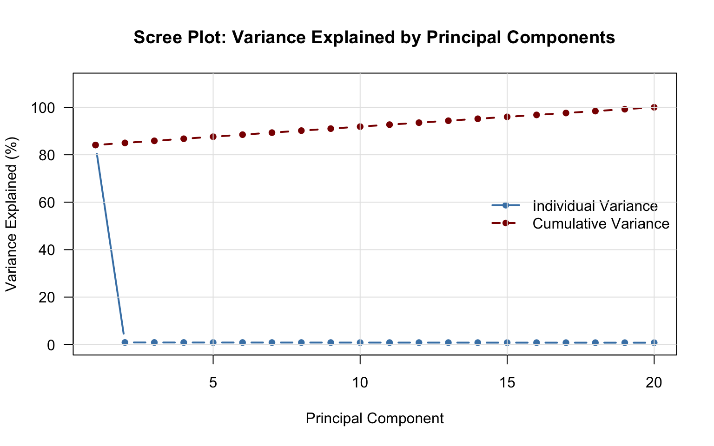
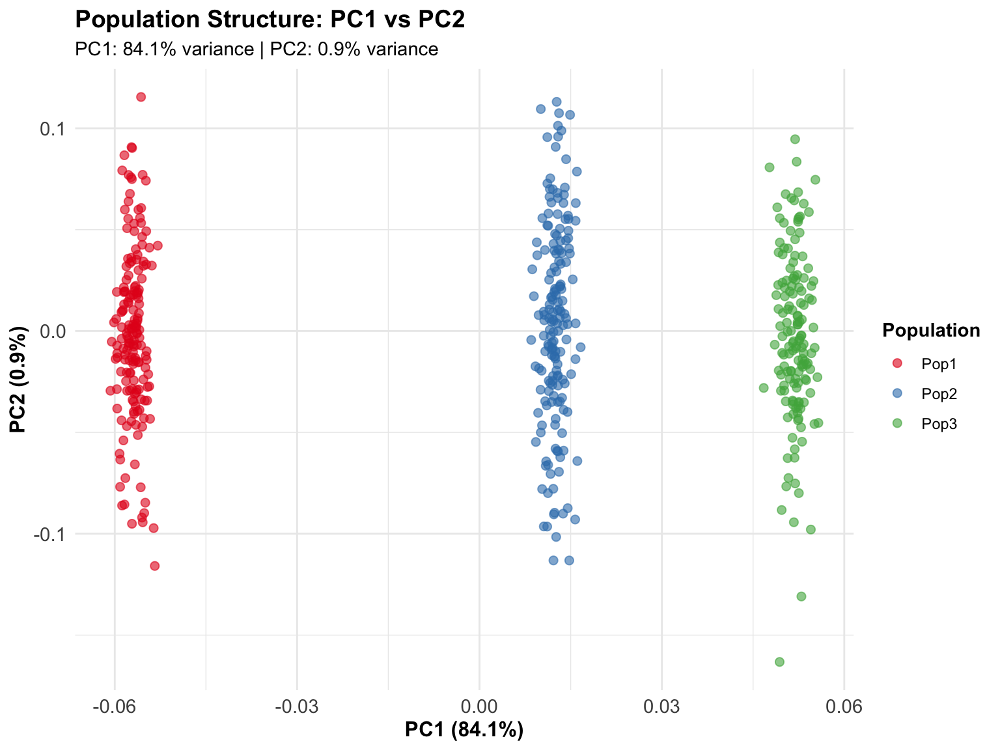

library(BigDataStatMeth)
library(ggplot2)Your First Analysis
Complete Workflow from Raw Data to Results
1 Overview
This tutorial walks you through a complete analysis workflow: from importing raw genomic data through quality control, statistical decomposition, and result visualization. Unlike previous tutorials that focused on individual operations, here you’ll see how everything fits together into a reproducible analysis pipeline.
Think of this as your template for real analyses. The specific dataset (simulated genomic SNPs) is less important than understanding the workflow structure: import → quality control → prepare data → analyse → validate → export. This pattern applies whether you’re analysing genomics, climate data, or financial time series.
1.1 What You’ll Learn
By the end of this tutorial, you will:
- Execute a complete analysis from raw data to final results
- Chain quality control steps using the HDF5Matrix pipeline
- Handle missing data through imputation
- Perform SVD on large matrices using block-wise algorithms
- Understand the structure of the SVD result object
- Extract and interpret singular values and vectors
- Create publication-quality visualizations
- Export results for downstream analyses
2 The Analysis Goal
We’ll analyse a simulated genomic dataset to:
- Identify population structure using SVD/PCA
- Remove technical artifacts through quality control
- Handle missing data appropriately
- Extract principal components for downstream analyses
This workflow mirrors real genomic studies but uses simulated data for tutorial purposes.
3 Prerequisites
Complete the previous tutorials:
Load required packages:
4 Step 1: Create and Import Data
4.1 Simulate Genomic Data
In real analyses, you’d load data from sequencing files. Here we simulate three populations with different allele frequencies to create population structure that SVD should recover:
set.seed(42)
n_samples <- 500
n_snps <- 2000
# Simulate 3 populations with distinct allele frequency profiles
pop1 <- matrix(sample(0:2, 175*n_snps, replace = TRUE,
prob = c(0.7, 0.2, 0.1)), 175, n_snps)
pop2 <- matrix(sample(0:2, 175*n_snps, replace = TRUE,
prob = c(0.2, 0.5, 0.3)), 175, n_snps)
pop3 <- matrix(sample(0:2, 150*n_snps, replace = TRUE,
prob = c(0.1, 0.3, 0.6)), 150, n_snps)
genotype <- rbind(pop1, pop2, pop3)
# Introduce ~2% missing values coded as 3 — the SNP data convention
# (see note below about HDF5 and missing values)
missing_idx <- sample(length(genotype), length(genotype) * 0.02)
genotype[missing_idx] <- 3L
rownames(genotype) <- paste0("Sample_", 1:n_samples)
colnames(genotype) <- paste0("SNP_", 1:n_snps)
# Population labels — used for visualization later
population <- c(rep("Pop1", 175), rep("Pop2", 175), rep("Pop3", 150))
cat("Genotype matrix created:\n")Genotype matrix created:cat(" Dimensions:", nrow(genotype), "samples ×", ncol(genotype), "SNPs\n") Dimensions: 500 samples × 2000 SNPscat(" Missing (coded as 3):", round(sum(genotype == 3L)/length(genotype)*100, 2), "%\n") Missing (coded as 3): 2 %
NoteAbout Dataset Size
This tutorial uses 500 samples × 2,000 SNPs for quick execution. Real genomic studies typically analyse much larger datasets:
- GWAS: 10,000–1,000,000 samples × 500,000–10,000,000 SNPs
- Whole genome: 100–10,000 samples × 3,000,000–100,000,000 variants
BigDataStatMeth handles these large-scale datasets by processing data in blocks directly from HDF5 files. The same code you write here works unchanged on those scales.
ImportantHDF5 Has No Native NA — Use 3 for Missing SNP Values
R’s NA has no direct equivalent in HDF5. HDF5 supports IEEE 754 special values (NaN, ±Inf) for floating-point data and allows defining a “fill value” at dataset creation, but there is no universal missing-value standard across tools.
BigDataStatMeth uses the integer value 3 as the missing indicator for SNP data, following the common 0/1/2/3 coding convention for diploid genotype data (0 = homozygous ref, 1 = heterozygous, 2 = homozygous alt, 3 = missing). This is not an HDF5 standard — it is the package’s convention for genomic data.
filter_low_coverage(), filter_maf(), and impute_snps() all expect 3 as the missing code, not R’s NA. If you write a matrix that contains NA values to HDF5, they are stored as NaN in the floating-point representation — and the QC and imputation functions will not recognise them as missing or will throw an error.
Rule: Replace any NA with 3L in your genotype matrix before calling hdf5_create_matrix().
4.2 Write to HDF5
We write the genotype matrix to HDF5 and keep the returned HDF5Matrix object. From this point the full matrix lives on disk — R only holds a reference to it:
analysis_file <- "genomic_analysis.hdf5"
raw_h5 <- hdf5_create_matrix(
filename = analysis_file,
dataset = "raw/genotypes",
data = genotype,
overwrite = TRUE
)
cat("✓ Data written to HDF5\n")✓ Data written to HDF5raw_h5HDF5Matrix object
File: genomic_analysis.hdf5
Path: raw/genotypes
Dimensions: 500 x 2000
Type:
Status: OPENlist_datasets(analysis_file)[1] "raw/.genotypes_dimnames/1" "raw/.genotypes_dimnames/2"
[3] "raw/genotypes" 5 Step 2: Quality Control
Quality control is the step most users are tempted to skip and most regret skipping. Noise, missing data, and uninformative variants all distort downstream results — they need to be removed before analysis, not after.
The three QC steps below chain naturally: each function takes an HDF5Matrix, applies a filter, and returns a new HDF5Matrix pointing to the cleaned dataset. No data is loaded into RAM at any point.
5.1 Remove Low-Quality Samples
Samples with too much missing data often indicate technical failures (low DNA quality, poor hybridisation). We remove samples with more than 5% missing values:
cat("Before sample QC:", nrow(raw_h5), "samples\n")Before sample QC: 500 samplesqc_samp_h5 <- filter_low_coverage(
raw_h5,
out_group = "qc",
out_dataset = "genotypes_samples_filtered",
pcent = 0.05,
by_cols = FALSE # FALSE = filter rows (samples)
)
cat("After sample QC:", nrow(qc_samp_h5), "samples\n")After sample QC: 500 samples5.2 Remove Low-Quality SNPs by Missingness
SNPs with high rates of missing genotype calls are often unreliable. We remove any SNP missing in more than 5% of samples:
cat("Before SNP missingness filter:", ncol(qc_samp_h5), "SNPs\n")Before SNP missingness filter: 2000 SNPsqc_miss_h5 <- filter_low_coverage(
qc_samp_h5,
out_group = "qc",
out_dataset = "genotypes_missing_filtered",
pcent = 0.05,
by_cols = TRUE # TRUE = filter columns (SNPs)
)
cat("After SNP missingness filter:", ncol(qc_miss_h5), "SNPs\n")After SNP missingness filter: 2000 SNPs5.3 Remove Low-Frequency SNPs (MAF Filter)
SNPs with a Minor Allele Frequency below 5% carry very little information about population structure and increase noise. We remove them:
cat("Before MAF filter:", ncol(qc_miss_h5), "SNPs\n")Before MAF filter: 2000 SNPsqc_maf_h5 <- filter_maf(
qc_miss_h5,
out_group = "qc",
out_dataset = "genotypes_qc_complete",
maf_threshold = 0.05,
by_cols = TRUE,
overwrite = TRUE
)
cat("After MAF filter:", ncol(qc_maf_h5), "SNPs\n")After MAF filter: 2000 SNPs
ImportantQuality Control is Critical
In real genomic analyses, QC removes:
- Technical artifacts: Failed samples, contamination, probe failures
- Uninformative markers: Rare variants provide little population-level signal
- Noisy data: High-missingness variants likely failed assay quality checks
Always perform QC before downstream analysis. The thresholds here (5% missing, 5% MAF) are typical but should be adjusted based on your study design and data quality.
5.4 Inspect QC Results
The HDF5Matrix objects we already have know their own dimensions — no need to re-open the file:
dim_raw <- dim(raw_h5)
dim_qc <- dim(qc_maf_h5)
cat("\nDimensions before QC:", dim_raw[1], "×", dim_raw[2], "\n")
Dimensions before QC: 500 × 2000 cat("Dimensions after QC:", dim_qc[1], "×", dim_qc[2], "\n")Dimensions after QC: 500 × 2000 cat("Samples retained:", round(dim_qc[1]/dim_raw[1]*100, 1), "%\n")Samples retained: 100 %cat("SNPs retained:", round(dim_qc[2]/dim_raw[2]*100, 1), "%\n")SNPs retained: 100 %6 Step 3: Impute Missing Data
After QC, some samples and SNPs with missingness below the threshold are still in the dataset — their missing values remain as 3. impute_snps() replaces each 3 with the most probable genotype for that SNP, computed from the observed 0/1/2 frequencies in the same column (or row). This is a discrete imputation suited to 0/1/2/3-coded genotype data:
qc_imp_h5 <- impute_snps(
qc_maf_h5,
out_group = "qc",
out_dataset = "genotypes_imputed",
by_cols = TRUE,
overwrite = TRUE
)
cat("✓ Missing values imputed\n")✓ Missing values imputedcat(" Final dimensions:", nrow(qc_imp_h5), "×", ncol(qc_imp_h5), "\n") Final dimensions: 500 × 2000
TipImputation Methods
impute_snps() uses discrete imputation: for each missing value (3) in a column (SNP), it samples a replacement from the empirical 0/1/2 frequency distribution of observed genotypes in that column. This preserves the integer nature of the data and is well-suited to 0/1/2/3-coded genotype matrices before PCA or SVD.
- When to use it: Low missingness (<5%) where the impact on downstream analysis is minimal
- For association studies: More sophisticated methods (BEAGLE, IMPUTE2) that use linkage disequilibrium may be preferable
- Always impute after QC: Imputing before filtering would waste time on variants that will be removed
7 Step 4: Perform SVD
SVD (Singular Value Decomposition) decomposes the matrix X into U %*% diag(d) %*% t(V). For genotype data, the left singular vectors (columns of U) give sample coordinates on each principal component — these are what we plot to reveal population structure.
We compute the top 20 components, centering the data before decomposition:
svd_result <- svd(
qc_imp_h5,
nu = 20, # Number of left singular vectors (sample PCs)
nv = 20, # Number of right singular vectors (SNP loadings)
center = TRUE, # Center each SNP to zero mean — essential
scale = FALSE, # Don't standardize (typical for genotype data)
k = 4, # Local SVDs per hierarchical level
q = 1, # Hierarchical levels
threads = 2,
overwrite = TRUE
)Anem a sortir de a RcppbdSVD_hdf5 cat("✓ SVD completed\n")✓ SVD completedcat(" Singular values computed:", length(svd_result$d), "\n") Singular values computed: 20
NoteSVD Parameters
- center = TRUE: Subtracts each SNP’s mean before decomposition — ensures PC1 captures structure, not mean differences
- scale = FALSE: Don’t divide by standard deviation (standard for 0/1/2-coded genotype data where all variables share the same scale)
- nu / nv: Number of singular vectors to return — requesting fewer components speeds up computation considerably for very large matrices
- k: Number of local SVDs per hierarchical level of the block-wise algorithm
- q: Number of hierarchical levels (1–2 is usually sufficient)
- threads: OpenMP threads for parallel execution (-1 = auto-detect)
8 Step 5: Extract and Examine Results
8.1 The SVD Result Object
svd() on an HDF5Matrix returns a named list with three elements. Understanding their types matters for how you access them:
| Element | Type | Description |
|---|---|---|
d |
Numeric vector | Singular values, decreasing (always in memory — small) |
u |
HDF5Matrix | Left singular vectors — one column per component, nsamples × nu |
v |
HDF5Matrix | Right singular vectors — one column per component, nsnps × nv |
d is always small (one number per component) so it lives in RAM directly. u and v are written to the HDF5 file because they can be large — for a 50,000-sample study, u alone would be several hundred MB.
8.2 Extract Principal Components
# Singular values — already in memory as a numeric vector
d_values <- svd_result$d
# u and v are HDF5Matrix objects on disk.
# Bring them to memory for plotting and export —
# safe here because our dataset is small.
# For large datasets: use as.matrix(svd_result$u[, 1:2]) to read only needed columns.
u_matrix <- as.matrix(svd_result$u)
v_matrix <- as.matrix(svd_result$v)
colnames(u_matrix) <- paste0("PC", 1:ncol(u_matrix))
colnames(v_matrix) <- paste0("PC", 1:ncol(v_matrix))
cat("✓ Extracted SVD components:\n")✓ Extracted SVD components:cat(" Singular values (d):", length(d_values), "values\n") Singular values (d): 20 valuescat(" Sample loadings (U):", nrow(u_matrix), "samples ×", ncol(u_matrix), "components\n") Sample loadings (U): 500 samples × 20 componentscat(" SNP loadings (V): ", nrow(v_matrix), "SNPs ×", ncol(v_matrix), "components\n") SNP loadings (V): 2000 SNPs × 20 componentsLet’s look at what these matrices actually contain:
cat("\nFirst 10 singular values:\n")
First 10 singular values:print(round(d_values[1:10], 4)) [1] 443.6376 45.5615 45.4009 45.1750 44.9668 44.9006 44.6237 44.5700
[9] 44.4686 44.3154cat("\nSample loadings (U) — first 5 samples × first 5 PCs:\n")
Sample loadings (U) — first 5 samples × first 5 PCs:print(u_matrix[1:5, 1:5]) PC1 PC2 PC3 PC4 PC5
[1,] -0.05682781 0.053016266 -0.003474687 0.085607030 -0.04562736
[2,] -0.05626294 0.005101822 -0.051954142 -0.013560306 -0.04202243
[3,] -0.05808061 0.025247695 -0.023814605 0.005835561 0.10484966
[4,] -0.05687827 -0.039807754 -0.029915012 -0.105279362 -0.02809550
[5,] -0.06071260 -0.029457042 0.026462830 0.029267791 -0.05157535cat("\nSNP loadings (V) — first 5 SNPs × first 5 PCs:\n")
SNP loadings (V) — first 5 SNPs × first 5 PCs:print(v_matrix[1:5, 1:5]) PC1 PC2 PC3 PC4 PC5
[1,] 0.01973084 -0.014799474 -0.02081501 0.002218469 0.001764252
[2,] 0.02326265 -0.014247611 -0.01211942 0.009087682 -0.008788470
[3,] 0.02258488 -0.040517428 -0.03184095 -0.034516318 -0.007408235
[4,] 0.02063754 0.011984684 0.06873765 0.027947999 -0.015229931
[5,] 0.02308911 0.004432822 0.01700466 0.009122469 -0.029913803
NoteUnderstanding the Outputs
Singular values (d): Larger values = more important components. They decrease rapidly — the first few PCs capture most structure and the rest capture progressively less.
U matrix (sample loadings): Each row is a sample, each column is a PC. The values tell you where each sample sits in the low-dimensional space defined by that component. This is what we plot to see population clusters.
V matrix (SNP loadings): Each row is a SNP, each column is a PC. High absolute values identify SNPs that drive separation along that component — useful for understanding the biological basis of the structure.
8.3 Variance Explained
The proportion of variance explained by each component is proportional to the square of its singular value. We compute it relative to the sum of the 20 components we requested:
variance_prop <- (d_values^2) / sum(d_values^2)
cumvar <- cumsum(variance_prop)
var_table <- data.frame(
PC = 1:10,
Individual = sprintf("%.2f%%", variance_prop[1:10] * 100),
Cumulative = sprintf("%.2f%%", cumvar[1:10] * 100)
)
knitr::kable(
var_table,
col.names = c("PC", "Individual (%)", "Cumulative (%)"),
align = c("r", "r", "r"),
caption = "Variance explained by the first 10 PCs (relative to top 20 components)"
)| PC | Individual (%) | Cumulative (%) |
|---|---|---|
| 1 | 84.11% | 84.11% |
| 2 | 0.89% | 84.99% |
| 3 | 0.88% | 85.87% |
| 4 | 0.87% | 86.75% |
| 5 | 0.86% | 87.61% |
| 6 | 0.86% | 88.47% |
| 7 | 0.85% | 89.32% |
| 8 | 0.85% | 90.17% |
| 9 | 0.85% | 91.02% |
| 10 | 0.84% | 91.86% |
9 Step 6: Visualize Results
9.1 Scree Plot
A scree plot shows how much variance each PC captures. The “elbow” where the curve flattens suggests how many meaningful components exist in the data:
n_show <- min(20, length(variance_prop))
pc_nums <- 1:n_show
var_pct <- variance_prop[1:n_show] * 100
cum_pct <- cumvar[1:n_show] * 100
plot(pc_nums, var_pct, type = "b", col = "steelblue", lwd = 2, pch = 16,
xlab = "Principal Component",
ylab = "Variance Explained (%)",
main = "Scree Plot: Variance Explained by Principal Components",
ylim = c(0, max(cum_pct) * 1.1),
las = 1)
lines(pc_nums, cum_pct, type = "b", col = "darkred", lwd = 2, pch = 16, lty = 2)
legend("right",
legend = c("Individual Variance", "Cumulative Variance"),
col = c("steelblue", "darkred"),
lty = c(1, 2), lwd = 2, pch = 16, bty = "n")
grid(col = "gray90", lty = 1)
9.2 PCA Plot
The sample loadings in U give us the coordinates to plot. PC1 and PC2 should separate the three simulated populations since they were designed with distinct allele frequencies:
pca_data <- data.frame(
PC1 = u_matrix[, 1],
PC2 = u_matrix[, 2],
PC3 = u_matrix[, 3],
Population = population[1:nrow(u_matrix)]
)
ggplot(pca_data, aes(x = PC1, y = PC2, color = Population)) +
geom_point(alpha = 0.6, size = 2) +
scale_color_manual(values = c("Pop1" = "#E41A1C",
"Pop2" = "#377EB8",
"Pop3" = "#4DAF4A")) +
labs(
title = "Population Structure: PC1 vs PC2",
subtitle = sprintf("PC1: %.1f%% variance | PC2: %.1f%% variance",
variance_prop[1]*100, variance_prop[2]*100),
x = sprintf("PC1 (%.1f%%)", variance_prop[1]*100),
y = sprintf("PC2 (%.1f%%)", variance_prop[2]*100)
) +
theme_minimal() +
theme(
plot.title = element_text(face = "bold", size = 14),
legend.position = "right",
legend.title = element_text(face = "bold"),
axis.text = element_text(size = 11),
axis.title = element_text(size = 12, face = "bold")
)
TipInterpreting PCA Plots
In this simulated example, the three populations separate clearly on PC1 and PC2 because we designed them with distinct allele frequencies.
In real data:
- PC1/PC2 separation: Often reflects continental ancestry
- Outliers: May indicate sample mix-ups or technical issues
- Gradients: Reflect admixture or geographic clines
- Clusters: Discrete populations or family structure
10 Step 7: Save Results for Downstream Use
10.1 Export PCs for Other Tools
Write the first 10 PCs to a text file for use in other software (regression adjustment, GWAS tools, etc.):
pcs_export <- data.frame(
SampleID = paste0("Sample_", 1:nrow(u_matrix)),
u_matrix[, 1:10]
)
write.table(pcs_export, "principal_components.txt",
row.names = FALSE, quote = FALSE, sep = "\t")
cat("✓ Principal components exported to principal_components.txt\n")✓ Principal components exported to principal_components.txt10.2 Document the Analysis
Every analysis should be documented. Detailed records enable reproducibility and serve as methods text for publications:
analysis_summary <- sprintf("
Genomic Analysis Summary
========================
Date: %s
Input Data:
- Samples: %d
- SNPs: %d
- Missing data: %.2f%%
Quality Control:
- Samples after QC: %d (%.1f%% retained)
- SNPs after QC: %d (%.1f%% retained)
- MAF threshold: 5%%
- Missing data threshold: 5%%
SVD Parameters:
- Centered: Yes
- Scaled: No
- Components requested (nu/nv): 20
- Blocks (k): 4
- Levels (q): 1
Variance Explained (relative to top 20 components):
- PC1: %.2f%%
- PC2: %.2f%%
- PC1-10 cumulative: %.2f%%
Output Files:
- HDF5 file: %s
- PCs export: principal_components.txt
- This summary: analysis_summary.txt
",
Sys.Date(),
dim_raw[1], dim_raw[2],
sum(genotype == 3L)/length(genotype)*100,
dim_qc[1], dim_qc[1]/dim_raw[1]*100,
dim_qc[2], dim_qc[2]/dim_raw[2]*100,
variance_prop[1]*100, variance_prop[2]*100, cumvar[10]*100,
analysis_file
)
writeLines(analysis_summary, "analysis_summary.txt")
cat("✓ Analysis summary saved\n\n")✓ Analysis summary savedcat(analysis_summary)
Genomic Analysis Summary
========================
Date: 2026-05-20
Input Data:
- Samples: 500
- SNPs: 2000
- Missing data: 2.00%
Quality Control:
- Samples after QC: 500 (100.0% retained)
- SNPs after QC: 2000 (100.0% retained)
- MAF threshold: 5%
- Missing data threshold: 5%
SVD Parameters:
- Centered: Yes
- Scaled: No
- Components requested (nu/nv): 20
- Blocks (k): 4
- Levels (q): 1
Variance Explained (relative to top 20 components):
- PC1: 84.11%
- PC2: 0.89%
- PC1-10 cumulative: 91.86%
Output Files:
- HDF5 file: genomic_analysis.hdf5
- PCs export: principal_components.txt
- This summary: analysis_summary.txt
TipGood Documentation Practices
Always record: - Input data characteristics (size, missing data rate) - QC thresholds and outcomes - Analysis parameters (centering, scaling, number of components) - Output file locations and dataset paths - Date and software version
Why this matters: Six months from now, or when a reviewer asks how you filtered variants, this document has the answers. It takes two minutes to write and saves hours of reconstruction.
11 Step 8: Clean Up
Close all open HDF5 handles and trigger garbage collection to ensure C++-level resources are released. This is especially important before re-running the script interactively:
hdf5_close_all()
gc() used (Mb) gc trigger (Mb) limit (Mb) max used (Mb)
Ncells 1570840 83.9 2564302 137 NA 2564302 137
Vcells 3876743 29.6 8388608 64 36864 8388389 64cat("✓ Analysis complete!\n")✓ Analysis complete!12 Interactive Exercise
12.1 Practice: Modifying the Analysis Workflow
Understanding a workflow means being able to adapt it to different scenarios. Update the code below for each situation:
# First: open the dataset as an HDF5Matrix
X <- hdf5_matrix("genomic_data.hdf5", "raw/genotypes")
# Scenario 1: More lenient sample QC (10% threshold)
qc_samp <- filter_low_coverage(
X,
out_group = "qc",
out_dataset = "samples_filtered",
pcent = 0.10, # Allow 10% missing instead of 5%
by_cols = FALSE
)
# Scenario 2: Stricter MAF filter (remove variants <10% frequency)
qc_maf <- filter_maf(
qc_samp,
out_group = "qc",
out_dataset = "snps_maf10",
maf_threshold = 0.10,
by_cols = TRUE
)
# Scenario 3: Different SVD parameters
# More components with faster block structure
qc_imp <- impute_snps(qc_maf, out_group = "qc", out_dataset = "imputed")
res <- svd(
qc_imp,
nu = 50, # More components
nv = 50,
center = TRUE,
scale = FALSE,
k = 8, # More blocks (faster for large matrices)
q = 1
)
# Scenario 4: Extract only the first 2 PCs from a large result
# Avoid as.matrix(res$u) if u is very large — subset on disk first
scores_2d <- as.matrix(res$u[, 1:2])
# Clean up
hdf5_close_all()
gc()
TipReflection Questions
1. Quality Control Decisions: - What QC thresholds are appropriate for your data? - Do you need additional filters (Hardy-Weinberg equilibrium, relatedness)? - How do you decide what’s “low quality” vs. “real biological signal”? - When should you be more vs. less stringent?
2. Missing Data Strategy: - Mean imputation is simple but crude — when is it acceptable? - How much missingness is too much to impute validly? - Should you remove high-missingness markers before imputing?
3. SVD Parameters: - How many components do you actually need? - What’s the trade-off between k=4, q=1 vs. k=8, q=2? - How do you verify your results are numerically accurate?
4. Result Access: - When should you use as.matrix(res$u) vs. as.matrix(res$u[, 1:2])? - If u has 50,000 rows × 50 columns, how large is that in RAM? - How would you work with it if it doesn’t fit in memory?
5. Scaling to Your Data: - This tutorial used 500 samples × 2,000 SNPs - What if you have 50,000 samples × 500,000 SNPs? - Which steps become bottlenecks? - How would you adjust nu, k, threads?
13 What You’ve Learned
✅ Complete pipeline: From raw data to interpretable results using chained HDF5Matrix operations
✅ Quality control: Sample filtering, SNP filtering, and imputation with filter_low_coverage(), filter_maf(), impute_snps()
✅ SVD analysis: Block-wise decomposition with svd() on HDF5Matrix
✅ Result structure: d (numeric), u and v (HDF5Matrix) and how to access each
✅ Visualization: Scree plots and PCA scatter plots
✅ Export and documentation: Preparing results and metadata for downstream use
14 Next Steps
Explore advanced workflows:
- Implementing PCA — Real 1000 Genomes data,
prcomp(), advanced visualization - Implementing CCA — Multi-omics integration
- Cross-Platform Workflows — Using results in Python, C++
Optimize for your data:
- Adjust QC thresholds based on your study design
- Use
prcomp()for a higher-level PCA interface with cumulative variance returned directly - Increase
nu/nvfor more components; decrease for speed - Tune
k,q, andthreadsfor your hardware
Learn the theory:
- Block-Wise Computing — How SVD scales to large data
- Linear Algebra Essentials — Mathematics behind PCA/SVD
15 Key Takeaways
Let’s consolidate what you’ve learned about executing complete analyses with BigDataStatMeth.
15.1 Essential Concepts
Analysis workflows follow a consistent structure regardless of domain or data type. Import → quality control → data preparation → analysis → validation → export. This pattern applies whether you’re analysing genomics, climate data, financial time series, or sensor networks. The specific QC steps and analysis methods change, but the overall structure remains constant.
The QC pipeline chains naturally through HDF5Matrix objects. Each of filter_low_coverage(), filter_maf(), and impute_snps() takes an HDF5Matrix and returns a new HDF5Matrix. This makes the pipeline explicit and readable: the output of each step is the input to the next, and no data moves into RAM at any point. The full matrix stays on disk throughout the entire QC process.
Quality control must come before analysis, not after. Running SVD on data with 30% missing values, duplicate samples, or technical artifacts produces results that look mathematically valid but are scientifically meaningless. You can’t fix bad input with good algorithms. QC failures discovered after weeks of analysis waste far more time than doing QC correctly from the start.
The SVD result is a list of three objects with different types. Singular values d are always small (one number per component) and live in RAM directly. Left and right singular vectors u and v can be large — they live on disk as HDF5Matrix objects and are brought to RAM only when needed with as.matrix(). For very large datasets, always subset on disk first: as.matrix(res$u[, 1:2]) reads only the two needed columns rather than loading the entire matrix.
Block-wise processing is transparent to the user. Calling svd() on an HDF5Matrix looks like a single function call with simple arguments. Behind the scenes, BigDataStatMeth partitioned the matrix into blocks, computed local SVDs, hierarchically merged the results, and stored the output — all without you writing a single line of partitioning logic. This abstraction is the package’s core value: sophisticated algorithms exposed through a familiar R interface.
Documentation is part of the analysis, not an afterthought. The analysis summary you created captures everything needed to reproduce the work: data sources, QC thresholds, parameters, software versions, dates. Without this, you’ll forget critical details within weeks. Future you, collaborators, and reviewers all depend on thorough documentation.
15.2 When to Apply This Workflow
✅ Use this complete workflow when:
- Your dataset exceeds memory limits — When
prcomp()orsvd()fail with memory errors, BigDataStatMeth’s disk-based approach becomes necessary, not optional. - Quality control is critical for validity — Genomic studies, clinical trials, sensor networks — anywhere that data quality directly affects conclusions.
- You’ll run multiple analyses on the same data — Converting to HDF5 and running QC once pays off when you subsequently run SVD, regression, association tests, and more.
- Reproducibility matters — Academic research, regulatory submissions, collaborative projects — anywhere others need to understand and verify your methods.
❌ Simpler approaches suffice when:
- Data fits comfortably in memory — If
prcomp(data)works without issues, stick with familiar R approaches. - One-off exploratory analysis — For quick investigations you won’t repeat, the HDF5 conversion overhead outweighs benefits.
- No quality control needed — Clean, well-curated datasets don’t need extensive QC pipelines.